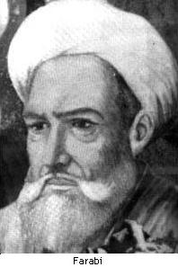

 FarabiTam adı Ebu Nasr Muhammed bin Tarhan bin Uzlug (Uzalag) al-Farabi’dir. Kaynaklarda ondan al-Feylesof at-Türki diye bahsedilir. İslam felsefesinin en önemli düşünürlerinden biri olan Farabi, Türkistan’ın Farab şehrindeki Vasic kasabasında M.S. 870’te doğdu. Babasının bir ordu kumandanı olduğu söylenir. Farabi Vasic’den dilbilgisi, mantık, felsefe, müzik, matematik ve fen çalıştığı Bağdat’a gitti. Burada Yunan felsefesinin önemli bir çevirmeni ve yorumcusu olan Ebu Beşir Matta b. Yunus’un öğrencisi oldu. Daha sonra Nesturi Yuhanna b. Haylan ile beraber çalıştı. Böylelikle Farabi, Harran, Antakya ve Merv’de bulunan İskenderiye Felsefe Okulu’na bağlandı. Anadili olan Türkçe’nin yanında Arapça, Farsça, Süryanice ve Yunanca biliyordu. Farabi çalışmalarının sonucunda birçok kitap ve risale yazmıştır. Bunlardan en bilinenleri şunlardır: Farabi'nin Eserleri1. Arau Ehli’l-Medineti’l-Fadıla 2. es-Siyasetu’l-Medeni (Mebadiu’l-Mevcudat) 3. İhsa’u’l-Ulum 4. Tahsilus-Seade 5. el-Cem’ Beyne Re’yeyi’l-Hakimeyn 6. Risale fi’l-Akıl 7. Kitabu’l-Mille 8. Kitabu’l-Hurup Farabi toplumla ilgili görüşlerini çeşitli eserlerinde açıklamıştır. Ama onun başyapıtları kesinlikle toplumsal içeriklidir. Bunlar, Arau Ehli’l-Medineti’l-Fadıla, es-Siyasetu’l-Medeni, Tahsilü’s-Saade ve Mille’dir. |
|||